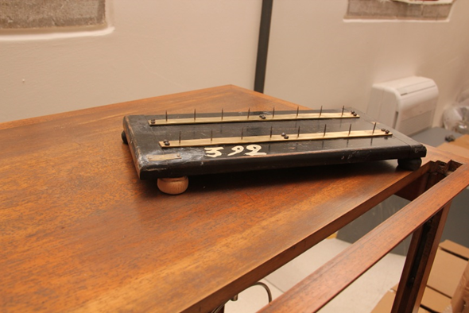

Magnetini
Scuola di provenienza: Liceo Classico "P. Colletta", Avellino
Settore: Magnetismo
Costruttori: Antonio Tarquini, Roma, Italia
Materiali: Legno, ottone, ferro
Accessori: Nessuno
Stato di conservazione: Buono, rifatto un piedino
Descrizione: Sostegno in legno con 16 aghi verticali e magnetini utilizzati per visualizzare la direzione delle linee di campo prodotte da una calamita. Ogni magnete anche deviato dalla direzione iniziale si dispone secondo la direzione degli altri